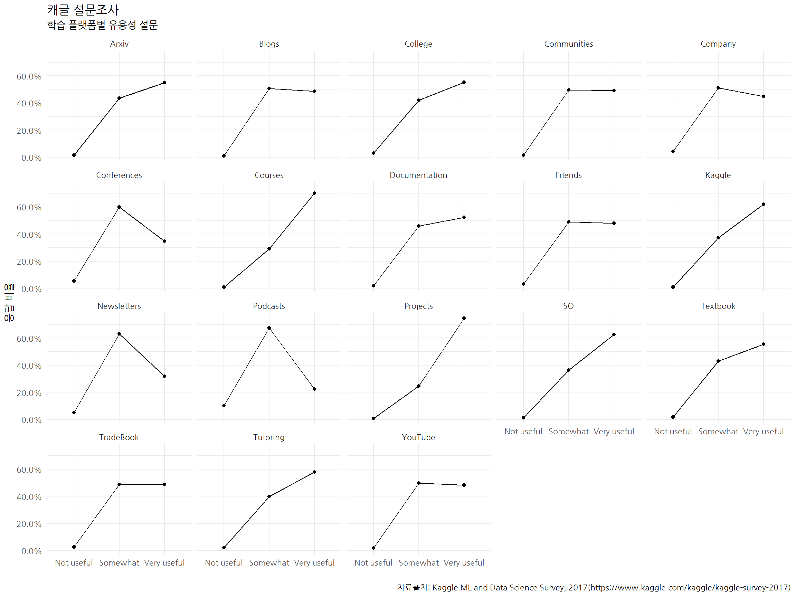
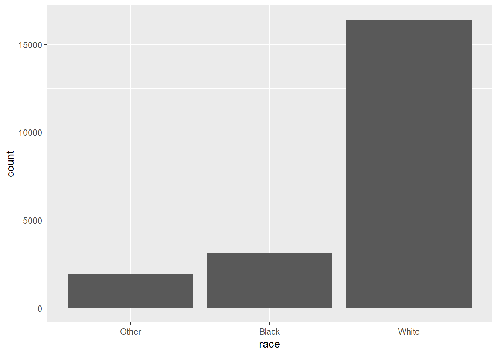
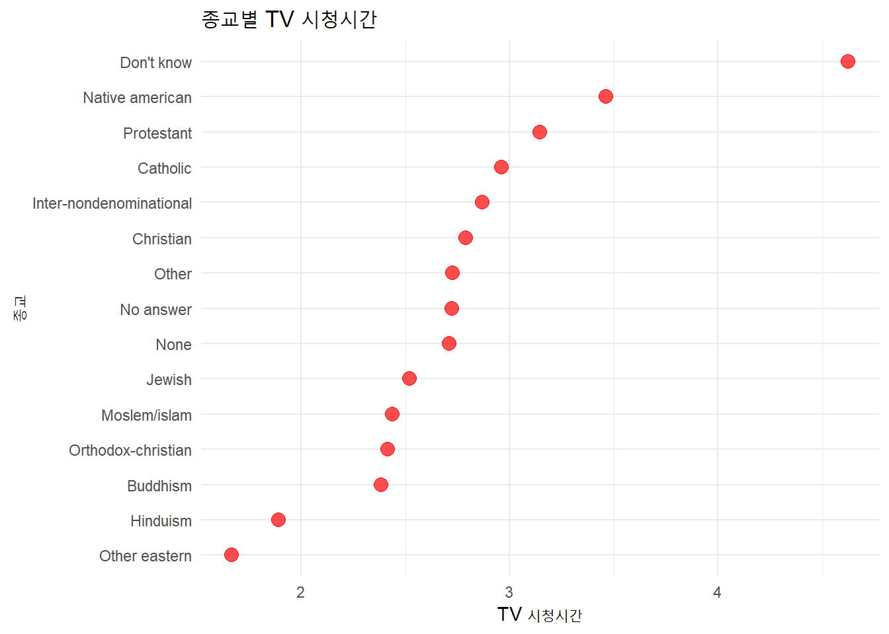

xwMOOC 기계학습
요인(Factor) - 범주형 자료형
들어가며 - 캐글 설문
Kaggle ML and Data Science Survey, 2017 설문조사 데이터의 학습플랫폼 설문문항이 전형적인 설문문항의 한 사례가 될 수 있다.
데이터를 가져와서 특정 변수만 추출하고 select(contains("LearningPlatformUsefulness")), 폭넓은 자료형태(wide)를 긴 자료형태(long)로 변형시킨다. 그리고 나서 mutate_if() 함수로 문자형자료형을 요인형자료형으로 변형시키고 나서 데이터를 정제시킨다.
# 0. 환경설정 -----
library(tidyverse)
library(extrafont)
loadfonts()
# 1. 데이터 -----
kaggle_dat <- read_csv("https://raw.githubusercontent.com/bkaniskan/KaggleDSsurvey/master/data/multipleChoiceResponses.csv")
## 1.1. 데이터 정제 -----
kaggle_df <- kaggle_dat %>%
select(contains("LearningPlatformUsefulness")) %>%
gather(platform, value) %>%
mutate_if(is.character, as.factor) %>%
mutate(platform = str_remove(platform, "LearningPlatformUsefulness")) %>%
filter(!is.na(value))플랫폼별로 빈도수를 조사한 후에 요인형 변수를 수준(level) 조정을 하고 시각화가 깔끔하게 될 수 있도록 라벨명을 조정한다.
## 1.2. 요인형 자료 -----
kaggle_cat_df <- kaggle_df %>%
group_by(platform) %>%
count(value) %>%
add_count(platform, wt=n) %>%
mutate(pcnt = n / nn) %>%
mutate(value = fct_relevel(value, "Not Useful", "Somewhat useful", "Very useful")) %>%
mutate(value = case_when(
str_detect(value, "Somewhat") ~ "Somewhat",
str_detect(value, "Not") ~ "Not useful",
str_detect(value, "Very") ~ "Very useful"
))작은 창에 각 학습플랫폼별로 내용일 잘 나타날 수 있도록 시각화한다.
# 2. 탐색적 데이터 분석 -----
## 2.1. 시각화 -----
kaggle_cat_df %>%
ggplot(aes(x=value, y=pcnt, group=platform)) +
geom_line() +
geom_point() +
facet_wrap(~platform) +
theme_minimal(base_family = "NanumGothic") +
scale_y_continuous(labels = scales::percent) +
labs(x="", y="응답 비율", title="캐글 설문조사",
subtitle = "학습 플랫폼별 유용성 설문",
caption = "자료출처: Kaggle ML and Data Science Survey, 2017(https://www.kaggle.com/kaggle/kaggle-survey-2017)")
forcats 팩키지 1
정성적 변수와 더불어 데이터 분석과 모형개발에서 필히 익숙하게 다뤄야 하는 데이터가 범주형 데이터다. 과거 install.packages("tidyverse"), install.packages("forcats") 명령어를 통해서 library(tidyverse), library(forcats)를 통해서 명시적으로 팩키지를 불러와서 적재했으나, 이제는 별도로 설치해서 적재할 필요는 없다. 이유는 현시점 기준 tidyverse의 핵심 일원이 되었기 때문이다.
범주형 데이터를 처리하는 요인(factor) 자료형을 이해하고, tidyverse 생태계에서 범주형 요인을 담당하는 forcats 팩키지를 통해서 범주형 데이터를 자유자재로 다룰 수 있는 역량을 익히자.
요인(factor) 기초 2
요인형 자료형을 문자형 대신 사용하게 되면 두가지 장점이 있는데, 가장 큰 장점은 아마도 오탈자로 생기는 새로운 유형 생성을 억제시킬 수 있다. 즉, 월은 12개월 밖에 존재하지 않는다. 따라서, 오탈자로 인해 범주가 추가로 생성되는 것을 사전에 방지할 수 있다. 그리고, 요인형을 자료형을 갖추게 되면 정렬을 쉽게 할 수도 있다.
일반 문자형 벡터을 정렬하게 되면 알파벳순으로 정렬하는데 무의미하다.
library(tidyverse)
x1 <- c("Dec", "Apr", "Jan", "Mar")
sort(x1)[1] "Apr" "Dec" "Jan" "Mar"
levels 인자로 수준을 정의하게 되면 오탈자로 인한 엉뚱한 범주가 추가되는 것을 방지하는 것과 더불어 정렬하게 되면 사람에게 좀더 의미있게 다가온다.
month_levels <- c(
"Jan", "Feb", "Mar", "Apr", "May", "Jun",
"Jul", "Aug", "Sep", "Oct", "Nov", "Dec")
y1 <- factor(x1, levels = month_levels)
y1[1] Dec Apr Jan Mar
Levels: Jan Feb Mar Apr May Jun Jul Aug Sep Oct Nov Dec
sort(y1)[1] Jan Mar Apr Dec
Levels: Jan Feb Mar Apr May Jun Jul Aug Sep Oct Nov Dec
x2 문자열 벡터에 Jam 범주가 들어가 있는데 이를 levels를 통해 범주를 설정하게 되면 오류를 방지할 수 있다. 특히, parse_factor 명령어를 사용하면 어디가 잘못되었는지 확인이 쉽다.
x2 <- c("Dec", "Apr", "Jam", "Mar")
y2 <- factor(x2, levels = month_levels)
y2[1] Dec Apr <NA> Mar
Levels: Jan Feb Mar Apr May Jun Jul Aug Sep Oct Nov Dec
y2 <- parse_factor(x2, levels = month_levels)levels를 생략하게 되면 기본디폴트 설정으로 알파벳순으로 범주를 생성하여 수준을 정해버린다.
factor(x1)[1] Dec Apr Jan Mar
Levels: Apr Dec Jan Mar
수준(levels) 순서를 맞추려면 unique() 혹은 fct_inorder() 함수를 사용한다.
f1 <- factor(x1, levels = unique(x1))
f1[1] Dec Apr Jan Mar
Levels: Dec Apr Jan Mar
f2 <- x1 %>% factor() %>% fct_inorder()
f2[1] Dec Apr Jan Mar
Levels: Dec Apr Jan Mar
levels(f2)[1] "Dec" "Apr" "Jan" "Mar"
GSS(General Social Survey) 사례
미국 시카고 대학 독립적인 연구기관 NORC에서 장기적으로 수행하는 설문조사 GSS(General Social Survey) 데이터를 실습자료로 활용한다. tidyverse를 도서관(library)에서 꺼내와서 메모리에 올리게 되면 gss_cat 데이터가 포함되어 있다.
gss_cat %>%
DT::datatable()Error in loadNamespace(name): there is no package called 'DT'
범주형 변수 시각화
forcats 팩키지에 포함되어 있는 데이터로 원하는 경우 ? gss-cat 명령어를 통해 데이터에 대한 자세한 내용을 확인할 수 있다. gss_cat 데이터프레임에 포함되어 있는 race변수는 is.factor() 함수로 요인형으로 이를 막대그래프로 표현해보자.
ggplot2에서 기본디폴트 설정으로 어떤 값도 없는 수준은 자동으로 drop 시킨다. 만약 변수에 포함된 모든 수준을 보려면 drop=FALSE를 넣어 명시적으로 작성한다.
** 수준(level) 자동 제거**
ggplot(gss_cat, aes(race)) +
geom_bar()
숨은 수준 명시적 표현
ggplot(gss_cat, aes(race)) +
geom_bar() +
scale_x_discrete(drop = FALSE)
단변량 범주형 변수
막대그래프의 경우 fct_infreq() 함수를 사용해서 오름 빈도수로 정렬이 가능하다: fct_rev()와 조합해서 사용해도 좋다. gss_cat 데이터에서 요인 수준을 조정하는데 빈도순으로 오름차순으로 요인을 fct_infreq()로 정렬하고 나서, fct_rev() 함수로 빈도수가 높은 순부터 역으로 요인 수준을 정렬하고 이를 시각화한다.
범주형 변수 결혼상태(marital)는 총 6개 수준이 있는데 빈도수가 다르기 때문에 가장 높은 빈도수부터 낮은 빈도수를 갖는 결혼상태로 정렬한 후에 ggplot()으로 막대그래프를 작성한다.
gss_cat %>%
mutate(marital = marital %>% fct_infreq() %>% fct_rev()) %>%
ggplot(aes(marital)) +
geom_bar()
범주형 변수 필수기능 두가지 3
요인과 관련되어 가장 많이 사용하는 기능은 다음과 같다.
- 수준 순서를 바꿔 조정함
- 수준내부 값을 뭉개거나 변경시키는 변화
수준을 조정하지 않는 경우 전반적인 패턴을 살펴보기 어렵다. 하지만, 수준 순서를 재조장하게 되면 가독성을 훨씬 높일 수 있다. fct_reorder() 함수를 사용하는데 인자가 세개 필요하다.
f, 수준을 변경하려는 요인명x, 수준을 변경하는데 사용되는 숫자 벡터에fun,f값 각각에 대해 다수 값이 있는 경우 이를 요약할 함수, 기본디폴트 함수는 중위수를 산출하는 함수median.
** 수준(level) 순서를 변경전**
relig <- gss_cat %>%
group_by(relig) %>%
summarise(
age = mean(age, na.rm = TRUE),
tvhours = mean(tvhours, na.rm = TRUE),
n = n()
)
ggplot(relig, aes(tvhours, relig)) + geom_point()
** 수준(level) 순서를 가독성 높게 적용**
ggplot(relig, aes(tvhours, fct_reorder(relig, tvhours))) +
geom_point()
먼저 mutate()로 요인 수준을 뽑아내서 수준을 재조정한 후에 aes() 함수에서 넣는 것도 가능합니다.
relig %>%
mutate(relig = fct_reorder(relig, tvhours)) %>%
ggplot(aes(tvhours, relig)) +
geom_point()종교별 TV 시청시간에 대한 실제품으로 사용으로 될 수 있도록 마무리를 해보자. 이를 위해서 geom_segment() 함수를 활용하여 직선을 추가한다. 그리고 기타 색상과 점크기를 조정하고 x축과 y축에 대한 라벨과 제목을 추가한다.
ggplot(relig, aes(tvhours, fct_reorder(relig, tvhours))) +
geom_point(color="red", size=3.5, alpha=0.7) +
geom_segment(
aes(x = 0,
y=fct_reorder(relig, tvhours, desc=TRUE),
xend = tvhours,
yend = fct_reorder(relig, tvhours, desc=TRUE)),
color = "pink",
linetype = "dashed",
size = 1) +
theme_minimal(base_family = "NanumGothic") +
labs(x="TV 시청시간", y="종교", title="종교별 TV 시청시간")
요인변수 내부 명칭 변경
요인변수 내부 수준을 바꾸거나 뭉개서 합치는 기능이 자주 사용되고 있다. 먼저 범주형변수 내부 수준(level)의 명칭을 변경사흔데 fct_recode() 함수를 사용한다. 특히, 시각화를 할 때 범주형변수 수준이 길거나 가독성이 떨어지는 경우 요인변수 수준명칭을 바뀌는 것이 필수적이다.
fct_recode() 함수는 명시적으로 언급되지 않는 수준을 그대로 두고, 존재하지 않는 수준을 우연히 언급할 경우 경고 메시지를 띄운다.
gss_cat %>% count(partyid)# A tibble: 10 x 2
partyid n
<fct> <int>
1 No answer 154
2 Don't know 1
3 Other party 393
4 Strong republican 2314
5 Not str republican 3032
6 Ind,near rep 1791
7 Independent 4119
8 Ind,near dem 2499
9 Not str democrat 3690
10 Strong democrat 3490
요인 수준 명칭 변경 사례
gss_cat %>%
mutate(partyid = fct_recode(partyid,
"Republican, strong" = "Strong republican",
"Republican, weak" = "Not str republican",
"Independent, near rep" = "Ind,near rep",
"Independent, near dem" = "Ind,near dem",
"Democrat, weak" = "Not str democrat",
"Democrat, strong" = "Strong democrat"
)) %>%
count(partyid)# A tibble: 10 x 2
partyid n
<fct> <int>
1 No answer 154
2 Don't know 1
3 Other party 393
4 Republican, strong 2314
5 Republican, weak 3032
6 Independent, near rep 1791
7 Independent 4119
8 Independent, near dem 2499
9 Democrat, weak 3690
10 Democrat, strong 3490
요인 수준 변경시 경고 사례
gss_cat %>%
mutate(partyid = fct_recode(partyid,
"Republican, strong" = "Strong republican",
"Republican, weak" = "Not str republican",
"Independent, near rep" = "Ind,near rep",
"Independent, near dem" = "Ind,near dem",
"Democrat, weak" = "Not str democrat",
"Democrat, strong" = "Strong democrat",
"Other" = "No answer",
"Other" = "Don't know",
"Other" = "Other party"
)) %>%
count(partyid)# A tibble: 8 x 2
partyid n
<fct> <int>
1 Other 548
2 Republican, strong 2314
3 Republican, weak 3032
4 Independent, near rep 1791
5 Independent 4119
6 Independent, near dem 2499
7 Democrat, weak 3690
8 Democrat, strong 3490
범주형 수준 조정
fct_collapse() 함수는 fct_recode()함수의 변종으로 매우 유용하다. 범주형 데이터를 분석할 경우 범주형 변수의 수준을 합쳐야 하는 경우가 종종 발생된다. 충청북도와 충청남도를 합쳐 충청도로 하거나 충청도의 대전광역시와 세종특별자치시를 충청도에 포함시키는 경우도 이런 유형의 작업에 해당된다.
fct_collapse() 함수에 합쳐질 수준을 정의하면 명시적으로 수준을 보고좋게 정리할 수 있다.
gss_cat %>%
mutate(partyid = fct_collapse(partyid,
other = c("No answer", "Don't know", "Other party"),
rep = c("Strong republican", "Not str republican"),
ind = c("Ind,near rep", "Independent", "Ind,near dem"),
dem = c("Not str democrat", "Strong democrat")
)) %>%
count(partyid)# A tibble: 4 x 2
partyid n
<fct> <int>
1 other 548
2 rep 5346
3 ind 8409
4 dem 7180
복잡한 데이터셋을 다룰 경우 처리할 변수가 상당히 많은 경우가 있다. 이런 경우 fct_lump() 함수가 유용하다. 범주내 수준에 작은 값이 할당된 경우 이를 합쳐 의미있는 수준에 대한 값이 되도록 만드는 기능을 수행한다. n=10으로 인자값을 넣어주면 해당 변수에 수준이 10개로 지정된다. 상황에 따라서는 fct_lump()함수에 인자로 prob=0.1와 같이 확률이 10% 미만이 되는 것은 모두 기타에 넣는 것도 가능하다. other_level="기타"를 넣어 합쳐지는 수준에 대한 명칭을 별도로 지정하는 것도 가능하다.
gss_cat %>%
mutate(relig = fct_lump(relig, n = 10, other_level = "기타" )) %>%
count(relig, sort = TRUE) %>%
print(n = Inf)# A tibble: 11 x 2
relig n
<fct> <int>
1 Protestant 10846
2 Catholic 5124
3 None 3523
4 Christian 689
5 Jewish 388
6 기타 234
7 Other 224
8 Buddhism 147
9 Inter-nondenominational 109
10 Moslem/islam 104
11 Orthodox-christian 95